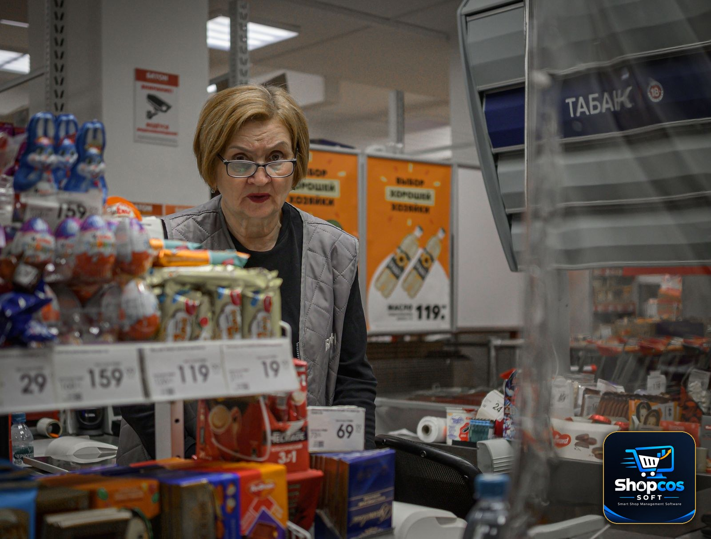

Grocery Store POS Software: Weighing Scales, Loose Items and Fast Queues

At 7 in the evening, a grocery store counter is the busiest place in the neighbourhood. A customer wants 1.5 kg of tomatoes, half a kilo of onions, two dozen eggs, a packet of tea, and a 5 kg bag of flour — and there are four more customers behind her, all in a hurry. The cashier weighs the tomatoes, reads the scale, types the weight, does the maths in his head, and hopes he typed the right rate. Tomatoes were Rs 140 per kg in the morning. By evening, after the mandi delivery, they are Rs 160. Did anyone update the rate?
This is the grocery counter's daily reality, and it is why most generic POS software fails in a grocery store. A clothing shop sells fixed items at fixed prices. A grocery store sells things by weight, by the dozen, by the piece, and by the bag — at prices that can change twice a day. Add expiry dates, wastage, and a queue that never stops, and you have the hardest billing job in retail. This guide explains what grocery store POS software must actually do: how weighing scales connect to billing, how loose items are handled without slowing the queue, what a fast counter really needs, and the eight questions to ask before you spend anything.
Why Grocery Billing Breaks Generic POS Software
Ordinary retail software assumes five things. A grocery counter violates all five before the first customer of the day:
- Everything has a fixed price. A packet of biscuits costs the same all day. But tomatoes, onions, potatoes, and fruit are priced per kilo, and the per-kilo rate moves with the morning mandi. A rate set on Monday can be wrong by Wednesday — and wrong rates mean either lost margin or angry customers.
- Everything is sold in whole units. Retail software counts pieces: 1, 2, 3. A grocery counter sells 0.750 kg of apples, 1.25 kg of rice, half a dozen eggs, and a quarter kilo of ginger. Quantities are decimals, not whole numbers, and the maths has to be exact to the rupee.
- Every item has a barcode. Packaged goods do. Loose vegetables, fruit, pulses, and spices do not. The cashier cannot scan a tomato. The software has to sell unbarcoded items just as fast as barcoded ones — or the queue stops.
- Stock lasts for months. A phone cover sits on a shelf for a year. Milk expires in days, bread in days, and fresh vegetables lose value every single day they sit unsold. Stock that is not tracked by expiry date becomes a dustbin full of money.
- Customers are patient. In a clothing shop, a customer waits while you wrap a shirt. In a grocery store at rush hour, a queue of six people will walk out if the billing takes too long — and go to the store down the road. Speed is not a luxury at a grocery counter. It is the business.
None of this is unusual. It is the daily reality of every grocery store and supermarket in Pakistan, from a small mohalla kiryana with a vegetable cart outside to a full supermarket with ten aisles. Software that cannot model weight, loose items, changing rates, and expiry is not "simpler" — it is wrong for the job, and the calculator and the register book will quietly stay in charge. Our guide to billing software for kiryana shops covers the small-store side of this same counter; this guide covers the full grocery workflow.
The Weighing-Scale Problem: Where Grocery Billing Is Won or Lost
The weighing scale is the heart of a grocery counter, and it is also where most billing goes wrong. Here is what actually happens at a typical counter without scale integration: the cashier puts the tomatoes on the scale, reads 1.350 kg, walks back to the computer, types "tomato," types "1.35," checks the rate, and multiplies. In a rush, the mistakes write themselves — 1.35 becomes 1.53, the morning rate stays when the evening rate should apply, or the cashier rounds the weight "approximately" and the customer notices.
Real grocery POS software connects directly to the electronic weighing scale. The scale sends the weight to the software the moment the item settles, and the bill line appears by itself: item, weight, rate per kg, amount. No typing, no mental maths, no wrong digits. Three things to check when a vendor talks about scale support:
- It must work with the scale you actually own. Most Pakistani grocery counters use a standard digital scale with a serial or USB connection. Ask the vendor to connect your exact scale model in the demo — not a scale in his office, yours. If he cannot, the feature does not exist for you.
- Tare weight must be handled. A plastic bag, a tray, or a basket adds weight. The software must subtract the container's weight before pricing — either through the scale's tare button or a per-item tare setting. A customer who pays for the weight of the bag will notice, and will not come back.
- It must print a weight label. In a supermarket, the customer weighs produce at the produce section, and the scale prints a barcode label with the item, weight, and price. At the counter, the cashier scans the label like any packaged item. If your store uses self-service weighing, this label flow is what keeps the queue moving.
Loose Items: Selling What Has No Barcode
Half of a grocery store's range has no barcode: loose rice, pulses, spices, flour, sugar, vegetables, fruit, eggs, and loose biscuits. These items are also the ones with the thinnest margins, so every billing mistake eats directly into profit. Good grocery software treats loose items as first-class citizens, not as an afterthought:
- Quick keys and PLU codes. The cashier should be able to press one key — or type a short code like "101" — and have "Tomato — Rs 160/kg" ready. Typing full item names during a rush is how queues form. The best grocery counters run almost entirely on quick keys for the 30–40 items that sell every day.
- Decimal quantities without friction. The software must accept 0.5 kg, 0.75 kg, 1.25 kg, and even 0.1 kg without complaint — and it must calculate the amount to the exact rupee, not round it in a way that cheats the customer or the shop. Ask the vendor to bill 0.375 kg of something in the demo and look at the amount. If it rounds badly, walk away.
- Multiple units for the same item. Rice sells by the kilo, by the 5 kg bag, and by the 25 kg sack — three prices, one stock. The software should let you sell any of them and deduct the correct weight from the same stock. A customer who buys a 5 kg bag and 2 kg loose should leave stock reduced by exactly 7 kg.
- Rate changes in seconds. When the mandi rate changes, the cashier should be able to update the per-kg rate for ten vegetables in under a minute, from the billing screen itself — not by digging through a settings menu. If changing a rate takes five minutes, it will not be changed, and the shop will sell at yesterday's price all day.
Here is what a single grocery bill actually looks like when the software does this properly:
| Item | Qty | Rate | Amount |
|---|---|---|---|
| Tomato | 1.500 kg | Rs 160 / kg | Rs 240 |
| Onion | 0.500 kg | Rs 120 / kg | Rs 60 |
| Basmati rice (loose) | 2.000 kg | Rs 380 / kg | Rs 760 |
| Eggs (farm) | 1 dozen | Rs 340 / dozen | Rs 340 |
| Tea (500g pack) | 1 pack | Rs 720 | Rs 720 |
| Atta (5 kg bag) | 1 bag | Rs 650 | Rs 650 |
| Total | Rs 2,770 |
Loose items, weighed items, dozens, packs, and bags — all on one bill, all deducted from the right stock, in the time it takes to scan a few barcodes. That is the standard a grocery counter should be judged by.
The number that matters: in a grocery store, the evening rush — roughly 5 pm to 9 pm — can carry 40–50% of the day's sales. A counter that bills one customer per minute instead of one per 40 seconds loses a third of its rush-hour customers to the queue. Over a month, that is not a small loss. It is the difference between a growing store and a struggling one. Speed at the counter is revenue.
Fast Queues: What Actually Makes a Counter Quick
Vendors love to say their software is "fast." What matters is not how fast the software runs, but how fast the cashier can finish a bill. Six things decide that:
- Barcode scanning that never misses. A scanner should read a barcode on the first pass, every time — even a crumpled packet. If the cashier has to scan twice or type the code by hand, the queue grows. Test the scanner with your own worst packets in the demo.
- One screen, no switching. The cashier should never leave the billing screen to look up a price, check stock, or apply a discount. Every extra screen is five seconds per customer, multiplied by a hundred customers a day.
- Cash, card, and JazzCash/Easypaisa on one bill. Customers pay in mixed ways — part cash, part mobile wallet. The software should split a payment across methods on the same bill and still close the day's accounts cleanly.
- Hold and recall. A customer forgets her wallet and steps aside; the next customer is billed while her bill waits. Without a hold-and-recall button, the whole queue waits with her. Our guide to stock management for small shops covers the counting habits that keep this fast counter honest at day's end.
- Offline billing that never stops. Load shedding and internet cuts are a Pakistani fact of life. The software must keep billing when the internet is down — and sync later — or the evening rush dies with the Wi-Fi.
- Instant reprint and return. A customer comes back ten minutes later: the milk was the wrong pack. The cashier should find the bill by phone number or bill number, return the item, and reprint — in under a minute, without a manager's password for every small return.
Expiry and Wastage: The Silent Leak
Fresh stock is the grocery store's biggest hidden cost. Milk, bread, yogurt, and vegetables do not wait for a sale — they expire. Most grocery stores lose 3–5% of their fresh stock to expiry and spoilage, and most of them never measure it, because their software does not track expiry dates at all.
Grocery POS software should track every batch with its expiry date, and do three things with that information:
- Sell oldest first (FIFO). When two batches of the same milk are on the shelf, the software should deduct from the batch that expires first. Without this, the old batch sits at the back, expires, and gets thrown away while the fresh batch sells.
- Warn before expiry, not after. A daily report of items expiring in the next 3 days lets the owner discount them, move them to the front, or return them to the supplier. An expiry report that only shows what already expired is a history lesson, not a tool.
- Record wastage honestly. Spoiled vegetables and damaged packets must be written off in the software, with a reason. A store that does not record wastage cannot tell whether it is losing money to spoilage, theft, or bad buying — and will blame the wrong one.

The 7 Features Grocery Store POS Software Must Have
Judge any grocery POS against these seven. If it fails two or more, it is a general retail system wearing a grocery label.
1. Weighing-scale integration
Covered above — the scale talks to the software, weights arrive automatically, tare is handled, and weight labels print for self-service weighing. Test it with your own scale before you pay.
2. Loose-item billing with quick keys
PLU codes and quick keys for the 30–40 daily items, decimal quantities, and per-kg rates that change in seconds. If the cashier types full names, the queue will tell you.
3. Daily rate management
A single screen to update all per-kg rates in the morning, with a history of what each rate was yesterday and last week. Rates that move with the mandi are the grocery business — the software must make changing them trivial.
4. Expiry and batch tracking
FIFO selling, expiry warnings 3 days ahead, and wastage recording. Fresh stock is too expensive to manage from memory.
5. Fast billing with hold, split payment, and instant reprint
One screen, barcode-first, hold-and-recall, mixed payments, and returns without a manager for every small item. Speed is the feature the customer actually feels.
6. Supplier and purchase tracking
You buy vegetables from the mandi every morning and packaged goods from distributors weekly. The software should track purchase rates, supplier balances, and the margin between buying rate and selling rate per item — because a grocery store that does not know its margin per kilo does not know its profit.
7. Udhar for regular customers
Neighbourhood grocery stores run on trust: regular customers take goods on udhar and pay at month's end. The software should keep a khata per customer, show the balance on the billing screen before the next sale, and send a statement on WhatsApp. Our guide to managing udhar khata explains why this one habit prevents most bad-credit decisions.
The 6 Mistakes Grocery Owners Make When Choosing Software
- Choosing on the bill design. A pretty bill is the least important feature. Scale integration, loose-item speed, and expiry tracking are what you will live with. Judge the software on those, not on the font.
- Buying software that cannot weigh. If the demo is run with packaged items only, ask the vendor to weigh 1.35 kg of tomatoes and bill them. If he reaches for a calculator, your counter will too — every day, on every customer.
- Ignoring the evening rush. A demo at 11 am with one customer proves nothing. Ask the vendor to bill ten mixed baskets back to back — loose, weighed, barcoded, and mixed payments — and time it. If it cannot survive your 7 pm rush, it cannot survive your business.
- Forgetting expiry. Software without batch and expiry tracking will let fresh stock rot quietly. The loss shows up once a month, in a dustbin, with no record of what it was worth.
- Paying monthly for software that holds your data hostage. If you stop paying and lose your customer khata, your item rates, and your sales history, you have not bought software — you have rented your own shop's records. Prefer a one-time license on your own PC, with your own daily backup. Our POS cost guide works through the three-year maths of monthly versus one-time pricing.
- No trial on your real counter. A demo with the vendor's sample data proves nothing. Run the software for a full month on your real vegetables, your real scale, your real mandi rates, and your real evening rush. If the cashier is still reaching for the calculator after a week, the software has failed.
The 8 Questions to Ask Before You Buy
- Does it connect to my exact weighing-scale model, and can you show it working on my counter?
- Can I bill loose items by PLU code or quick key, with decimal quantities, without leaving the billing screen?
- How long does it take to update the per-kg rates for all my vegetables — and can the cashier do it from the billing screen?
- Does it track batches and expiry dates, sell oldest first, and warn me 3 days before expiry?
- Can the cashier hold a bill, split a payment across cash and mobile wallet, and reprint a bill instantly?
- Does it keep billing when the internet goes down, and sync when it comes back?
- Can I keep a khata for regular customers, see their balance before the next sale, and send their statement on WhatsApp?
- If I stop paying, do I keep my data — every item, every rate, every customer balance, every bill — on my own computer?
Run those eight questions on any software, including ours, and compare the answers side by side. A vendor who answers clearly is a vendor who has actually served grocery stores. A vendor who changes the subject to the bill design has told you everything you need to know.
The Bottom Line
A grocery store is not a normal retail shop with more shelves. It is a weighing-scale business, a loose-item business, a daily-rate business, and a race against expiry — all happening at the speed of an evening queue. Software built for a clothing shop will print your bills beautifully and lose your business quietly: in wrong weights, stale rates, expired stock, and customers who walked out of a slow queue.
The right software does four things without being asked: it reads the scale, it bills loose items as fast as barcoded ones, it warns you before stock expires, and it keeps billing when the internet dies. Everything else — the pretty bill, the reports, the extras — is decoration. Get the four things right, test them on your real counter for a full month, and the calculator can finally retire.
Photo credits: Colourful assortment of fresh vegetables at a supermarket display photo by Greta Hoffman · Elderly vendor weighing produce in a vibrant Asian street market photo by Wasif Mujahid · Supermarket scene with cashier and assortment of products at checkout counter photo by Radik 2707 — all via Pexels.
Try the full software free for 7 days — no card, no limits trap.
shopcos soft: Rs 40,000 one-time (lifetime license), weighing-scale integration, loose-item billing with quick keys, per-kg rate management, expiry and batch tracking, offline billing, customer khata with WhatsApp statements, full Urdu interface — and WhatsApp support in your language. Try it free for 7 days before you spend anything.
Start 7-day Free TrialQuestions? WhatsApp us: 0326 4025618